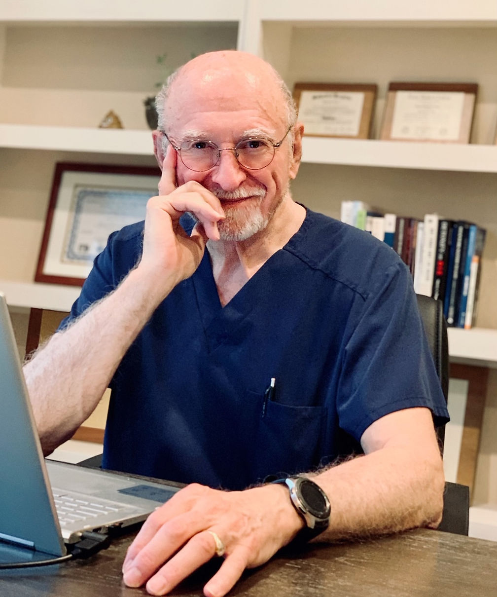

Fifty years of clinical foundation, four practitioners, one coordinated record. Meet the team carrying forward Dr. Feste's model — and writing its next chapter.
Vital Health continues to operate on the strong clinical foundations established by our founder, Dr. Joseph Feste. While Dr. Feste is no longer seeing patients and is now in an administrative and advisory role, he remains a guiding source of research, insight, and educational leadership as we carry forward his fifty years of expertise.
When Dr. Feste opened his practice five decades ago, the dominant story in medicine was that symptoms were either acute or psychological. He disagreed, quietly and consistently, for fifty years. He ordered the panels other clinicians did not order. He read the whole chart. He stayed.
That patience is now the house style of Vital Health. It is why we begin with measurement that takes weeks, not minutes. It is why a first visit is ninety minutes, not fifteen. It is why care here reads more like a relationship than an appointment.
Four clinicians, one coordinated chart. The patient stays with the practice, not the name on the door — and the protocol evolves alongside the person, not a template.
Each patient is assigned a primary practitioner; the team reads your labs together. One coordinated record, four sets of eyes.
Board-certified OBGYN whose five decades of clinical practice built the foundation of Vital Health. Now in an advisory and educational role — no longer seeing patients — Dr. Feste remains the source of the practice's clinical rigor and its long view.
His contribution today is research, insight, and educational leadership for the team that carries his model forward.

With a BA in Biology from Baylor University and an MD from the University of Texas Medical Branch, Dr. Swett completed her Emergency Medicine residency in Chicago and has been board-certified by the American Board of Emergency Medicine throughout her 23-year career.
She shifted from emergency medicine to preventive care after recognizing "so many emergencies were rooted in preventable chronic diseases." Today Dr. Swett leads Vital Health's clinical practice and is dedicated to guiding patients toward balanced, sustainable health.
Over thirty years of experience in healthcare — including primary care, regenerative medicine, functional medicine, endocrinology, and hormone replacement therapy. BS in Nursing from UT Austin (1994), MS in Adult Health from Texas Woman's University (2002). Certified in functional medicine and ozone therapy.
Kerri's practice sits at the intersection of bioidentical HRT, regenerative medicine, endocrinology, and IV protocols. She has a passion for helping patients prevent illness and achieve the best version of themselves.
Board-certified Family Nurse Practitioner specializing in bioidentical hormone replacement therapy and integrative, preventative medicine. BS in Nursing from Hunter College, MS in Nursing from Long Island University. Fluent in Spanish.
Kristel is passionate about helping patients feel energized, balanced, and confident through personalized, root-cause care.
Thirty minutes, no cost. We'll hear what's bringing you in and tell you whether Vital Health is the right fit.